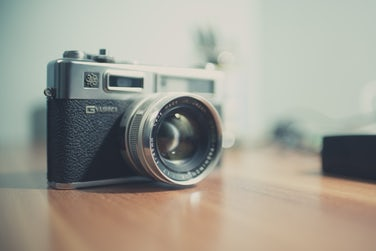

Hi, I'm Joash. I'm a Singapore-based photographer. I got my first DSLR (Digital Single-Lens Reflex) camera when I was 11 and later discovered my passion for photography. Currently, I'm a student at Anglo-Chinese School (Independent) and am in the Photographic Society of my school. I frequently help to photograph school events and am also a volunteer photographer at the youth service of New Creation Church. If you need a photographer, feel free to contact me!
My Goals
 While some photographers' goals are solely to capture stunning, extraordinary and remarkable images, that is not my only goal. I personally believe every photograph tells a story, and I aim to capture a dazzling moment in time, where sometime in the future, we can re-live and delight in those precious moment. To achieve this, I carefully consider what impacts the photograph I am about to take will have on the viewer, and how to enhance the viewer's experience. I also make use of dramatic angles, natural lighting and framing to achieve my goal.
While some photographers' goals are solely to capture stunning, extraordinary and remarkable images, that is not my only goal. I personally believe every photograph tells a story, and I aim to capture a dazzling moment in time, where sometime in the future, we can re-live and delight in those precious moment. To achieve this, I carefully consider what impacts the photograph I am about to take will have on the viewer, and how to enhance the viewer's experience. I also make use of dramatic angles, natural lighting and framing to achieve my goal.
My Awards and Clientele
Awards
- Canon Youth Photo Challenge 2017 (Basic/Intermediate/Advanced)
- Featured on EnjoySingapore (www.instagram.com/enjoysingapore) on 24th August 2017
- Canon Photo Marathon XV (Participation)
Clientele
- Concept Lab (conceptlab.com.sg)
- DC Music Studio (Dr Choo Shiow Ling Sheryl)
- IST Book Productions (istonline.biz)
- John Monteiro Piano (facebook.com/monteirokinderpiano/)
- Kuan Ren (instagram.com/angkuanren)
- Scissors Art (scissors-art-sg.com)
- Victoria, Social Media Influencer (victoinette.com)
My Equipment
Wondering what kind of equipment I use? You're about to find out! First and foremost, I would like to emphasize photography is not just about the equipment. It's about technique, skill and experience. You can't take a good photograph even if you have the best equipment in the world but no knowledge on photography, but you can take a decent shot with an average camera if you have knowledge on photography. That being said, I use the Canon 6D with the following lenses: 17-40mm f/4, 50mm f/1.2, 70-200mm f/2.8 and the 2x extender. For aerial shots, I use the DJI Mavic Pro.